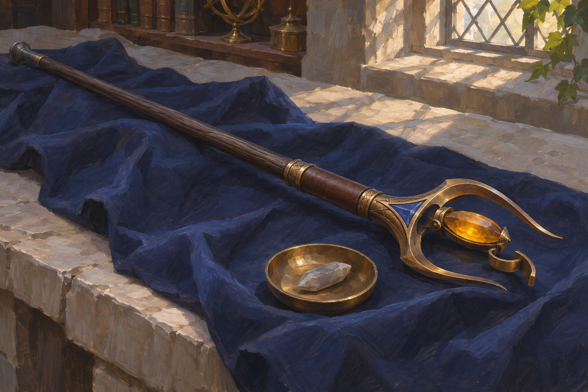
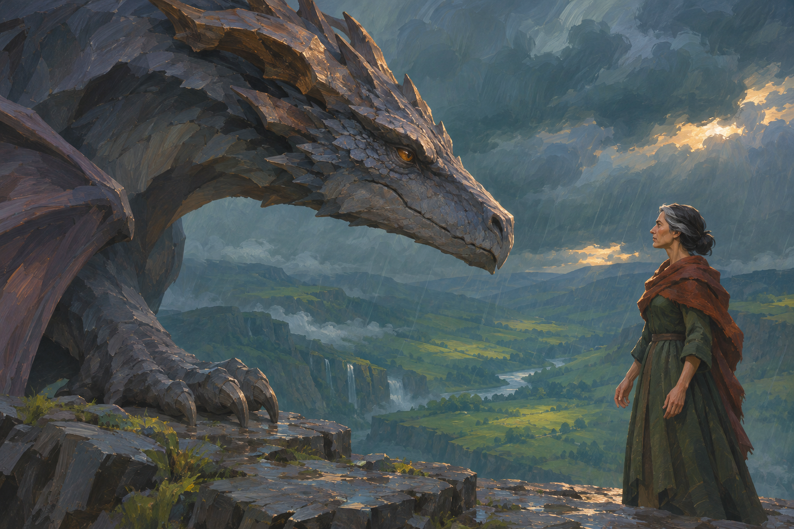

05 · Accepted reference
The Ashwood Reserve
Equipment construction, materials and staff still-life presentation; no card or universal item-power rule selected.

07 · Accepted reference
A Dragon Listening
Primal intelligent dragon encounter and restrained magical communication; no new dragon taxonomy or named characters established.
